内容仅作科普，不构成投资建议
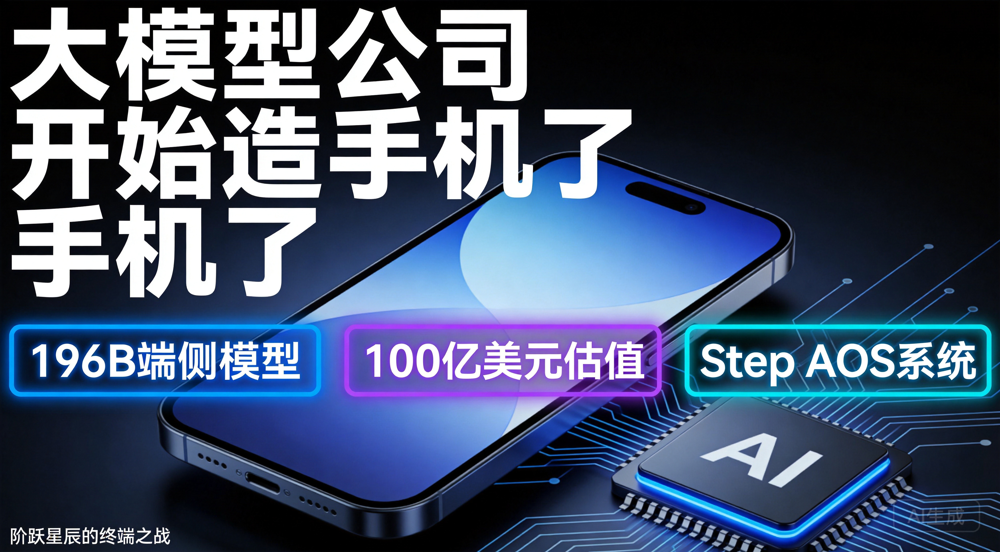
2026年7月13日晚7点，一家成立刚满3年的大模型公司，正式发布了全球首款AI智能体手机。不是给安卓系统加个AI助手，而是从零做了一套操作系统——Step AOS。终端品牌命名为STEPX，首款手机型号为STEPX Neo。
这家公司叫阶跃星辰。估值约100亿美元，但2025年营收不到5亿元人民币，PS（市销率）高达140倍。什么概念？你花140块钱买一个每年只赚1块钱的公司，赌的是它未来能赚10块钱。
它凭什么敢造手机？这个故事是泡沫还是拐点？
先说结论：阶跃星辰造手机这件事，短期内是一场豪赌，但中长期看，它可能是大模型行业从"卖模型"到"卖体验"的分水岭事件。
要理解这个判断，我们得先把牌桌看清楚——全球大模型的竞争格局，到底长什么样。
先看一组硬数据。根据Momentic Marketing和First Page Sage 2026年6月的统计，全球大模型流量市场份额是这样的：
| 排名 | 公司 | 全球流量份额 | 月活跃用户 |
|---|---|---|---|
| 1 | OpenAI | 54.7% | 9亿+ |
| 2 | 27.4% | 7.5亿+ | |
| 3 | Anthropic | 8.2% | 2.9亿+ |
| 4 | 字节跳动（豆包） | 4.1% | 3.45亿 |
| 5 | DeepSeek | 2.9% | 1.2亿+ |
| 6 | 阿里巴巴（通义千问） | 1.5% | 1.66亿 |
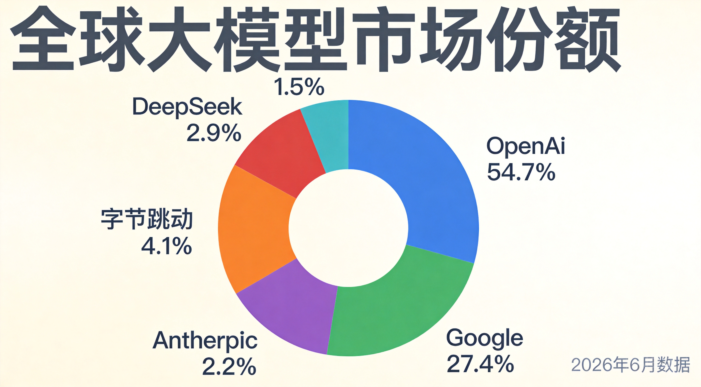
OpenAI依然是绝对霸主，但它的份额已经从巅峰期的80%掉到55%以下。Sensor Tower的数据显示，到2026年5月，ChatGPT的全球份额首次跌破50%，只剩46.4%。Google Gemini吃到了最大的红利，份额稳定在27%以上。Anthropic的Claude从半年前的3%飙到10%左右，增速惊人。
一个重要的结构性变化是：用户不再忠于单一模型了。 就像浏览器市场从IE一家独大变成Chrome、Safari、Edge混战一样，AI助手市场正在进入"按需混用"时代——写作用Claude，搜信息用Gemini，画图用ChatGPT。三家合计贡献了89%的使用时长，但用户在各家之间频繁切换。
中国市场的格局完全不同。根据QuestModule 2026年6月的数据：
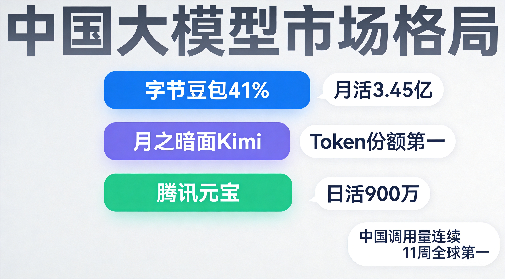
另一个值得关注的信号来自OpenRouter——全球最大的模型调用平台。2026年6月数据显示，中国模型在全球的调用量首次稳定超越美国：23.45万亿词元对46.7万亿词元（全球总调用量），前五名中中国模型占了四席。
这说明什么？中国大模型在"被调用量"上已经赢了，但还没在"被付费"上赢。 开源模型的大量免费调用拉高了数据，但真正的高价值企业付费市场，OpenAI和Anthropic仍然遥遥领先。
这是用户特别关心的部分。我们直接看SuperCLUE 2026年6月的中文大模型排行榜：
| 排名 | 模型 | 机构 | SuperCLUE总分 |
|---|---|---|---|
| 1 | Qwen3.5-Plus | 阿里巴巴 | 88.5 |
| 2 | Doubao-Seed-2.0-pro | 字节跳动 | 87.8 |
| 3 | DeepSeek V4-Pro | 深度求索 | 86.5 |
| 4 | GLM-5.1 | 智谱AI | 85.4 |
| 5 | Kimi K2.6 | 月之暗面 | 84.6 |
| 6 | MiniMax M2.7 | MiniMax | 83.2 |
| 7 | ERNIE 5.1 | 百度 | 82.7 |
| 8 | Pangu-Ultra 718B | 华为 | 81.9 |
| 9 | Baichuan 5.0 | 百川智能 | 79.4 |
| 10 | Yi-2.0 | 零一万物 | 78.8 |
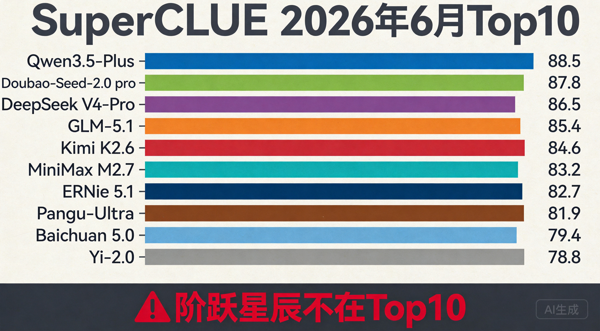
注意看：阶跃星辰的Step系列不在这个榜单的Top10里。 这是一个重要的反差叙事点——一家要造手机的大模型公司，它的模型在主流性能排行里甚至进不了前十。
LMArena（原Chatbot Arena）是基于真人匿名A/B投票的全球排名，更能反映"用户实际体感"。2026年7月最新数据：
| 排名 | 模型 | Elo分数 |
|---|---|---|
| 1 | Claude Fable 5（Anthropic） | 1525 |
| 2 | GPT-5.6（OpenAI） | 1514 |
| 3 | Claude Opus 4.8（Anthropic） | 1512 |
| 4 | GPT-5.5 Pro（OpenAI） | 1510 |
| ... | ... | ... |
| 约第30名 | DeepSeek V4 Pro | 1462（国产最高） |
| 约第35名 | Qwen 3.7 Max | 1455 |
国产模型在全球Elo排名中，DeepSeek V4 Pro以1462分排在国产第一，但与第一名Claude Fable 5的1525分仍有明显差距。阶跃星辰同样不在前列。
看到这里，你可能会问：一家模型排名都进不了Top10的公司，凭什么造手机？
答案是：阶跃星辰根本不想在云端跟人卷排名。
这是一个战略选择，不是能力不足。就像特斯拉早期不跟丰田比发动机调校，而是直接换赛道做电动车一样，阶跃星辰的逻辑是：既然在通用模型能力上很难追上前五，不如把模型能力直接塞进终端设备里，让用户通过"体验"而非"跑分"来感知AI的价值。
跑分是给开发者看的，体验是给普通人用的。这两件事的商业逻辑完全不同。
看看中国大模型第一梯队的估值对比：
| 公司 | 最新估值/市值 | PS倍数（约） | 2025年营收 |
|---|---|---|---|
| 智谱（港股） | 7312亿港元 | ~700倍 | 7.24亿元 |
| DeepSeek | 3065亿元 | — | 未公开 |
| 月之暗面Kimi | ~2100亿元（300亿美元） | — | ARR约20亿元 |
| MiniMax（港股） | 842亿港元 | ~400倍 | 约5.7亿元 |
| 阶跃星辰 | ~720亿元（100亿美元） | ~140倍 | ~5亿元 |
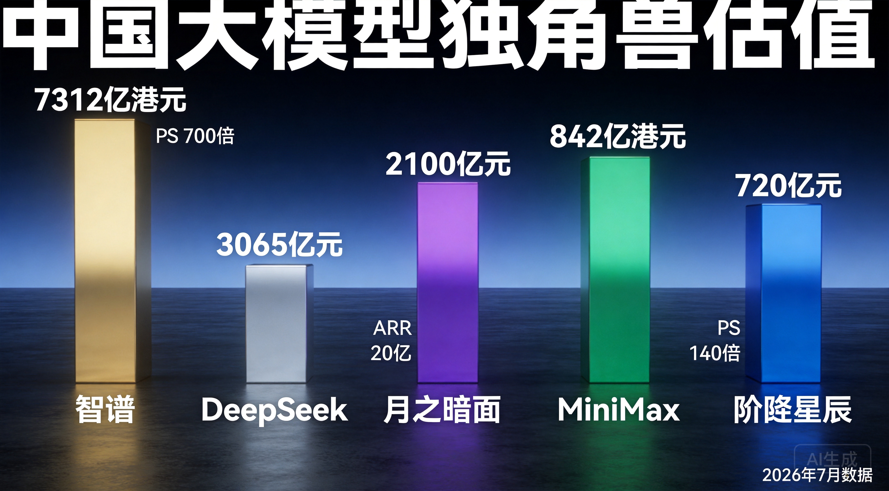
智谱的PS倍数高达700倍，是阶跃的5倍。这意味着市场对智谱的"基础模型平台"故事给出的溢价远高于阶跃的"AI+终端"路线。但阶跃140倍的PS也不算便宜了——作为一个年营收只有5亿的公司，它的估值里包含了大量对未来的透支。
2026年上半年，大模型赛道融资TOP3：
三家合计930亿元，占整个赛道融资的30%。资本正在以前所未有的速度向头部集中。
阶跃星辰的融资节奏尤其疯狂——2026年1月完成超50亿元B+轮，5月又完成近25亿美元（约170亿元）Pre-IPO轮，投资方包括华勤技术、龙旗科技、豪威集团、中兴通讯等一水儿的硬件产业链公司，以及腾讯的三轮加持。
这不是普通的财务投资，这是产业链上下游在用真金白银"预订"阶跃星辰的终端产能。
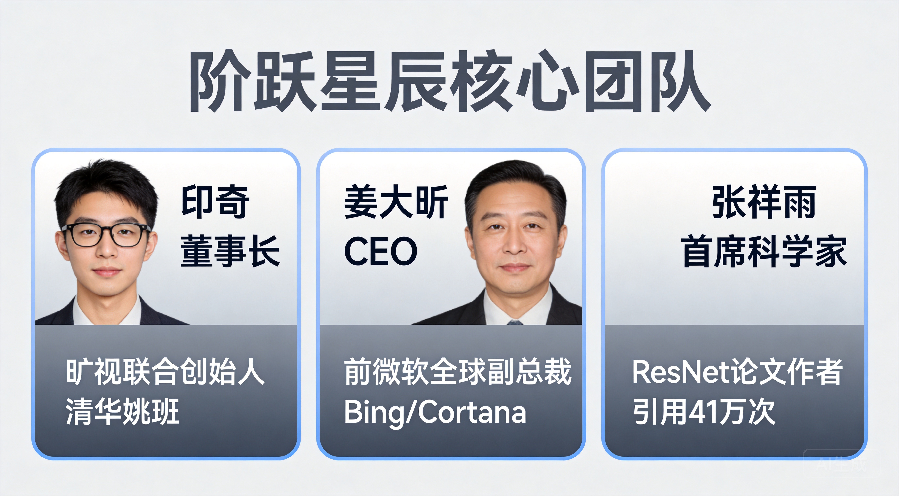
很多人可能第一次听说这家公司，但它的团队阵容堪称豪华：
2023年4月在上海成立，到现在刚好3年。已发布40+款自研模型，覆盖语言、多模态、推理等方向。
但真正让阶跃星辰与众不同的，不是它的模型有多强，而是它的落地策略：
说白了，阶跃星辰不是那种只会在实验室跑分的公司。它选择了一条更重但更接地气的路——把模型塞进别人家的手机和汽车里，先让用户"用起来"。
这个问题背后的逻辑其实很残酷。
中国C端用户几乎没有为AI付费的习惯。ChatGPT Plus在美国卖20美元/月，有3800万订阅用户。中国呢？大部分用户连1块钱的API调用费都不愿意出。
B端更是血海。2025年国内大模型公司只完成了22笔融资，融资频次和规模双双腰斩。资本不再为"参数故事"买单，转而对"交付能力"与"场景闭环"提出近乎苛刻的要求。API价格在一年内跌了90%以上，DeepSeek V4-Flash的API价格低到每百万Token 0.28美元，不到GPT-5.5的1%。
卖模型不赚钱，这是事实。
OpenAI如果只做模型，永远只是寄生在别人生态里的"插件"。掌控硬件终端，模型厂商才能：
这一点是关键。中国有全球最完善的手机供应链——华勤技术是全球头部手机ODM厂商，从芯片到整机的全链条制造能力，让一个软件公司"跨界造手机"的门槛大幅降低。
"除了Chatbot和Agent之外，硬件可能是大模型快速形成商业闭环的场景。"
这句话的潜台词是：当模型能力趋同、API价格见底的时候，谁能把AI能力变成消费者愿意掏钱买的产品，谁就能活下来。
这是最重要的区别。目前市面上绝大多数所谓的"AI手机"，本质上是在安卓系统上加一层AI功能——语音助手、AI修图、智能摘要。
阶跃星辰的Step AOS走的是完全不同的路：从Android、Linux与RTOS底层提取重构，打造了一套全新的操作系统架构。核心设计理念是让Agent成为系统的一等公民，而非在现有系统上叠加AI功能。
打个比方：传统AI手机是在一栋老楼里加了电梯，Step AOS是直接建了一栋新楼，电梯从地基开始就是为电梯设计的。
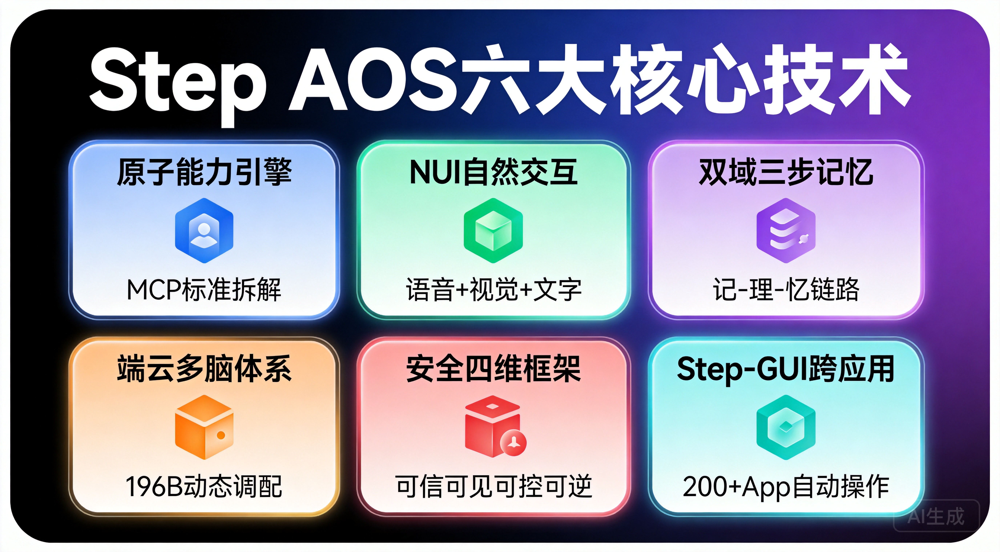
发布会上，阶跃星辰详细拆解了Step AOS的技术架构，包含六大核心模块：
① 原子能力引擎
以MCP（Model Context Protocol）标准将系统底层能力拆解为通讯、应用、文件、系统四大类最小单元。每个"原子能力"都是标准化的可调用接口，Agent可以像搭积木一样自由组合这些能力来完成复杂任务。
② NUI自然交互机制
NUI（Natural User Interface）支持语音、视觉、文字多模态输入，用户可以用最自然的方式与手机交互——说话、打字、甚至让摄像头"看"东西，都能触发AI响应。
③ 双域三步记忆结构
独创"用户域+智能体域"双域记忆架构，配合"记-理-忆"三步处理流程。用户域存储个人偏好和历史行为，智能体域记录任务上下文和执行经验，让AI真正"记住"你是谁、你要什么。
④ 端云多脑体系
STEPX Neo深度内置196B参数大模型，同时支持端云协同——依据任务复杂度动态调配不同规模的模型。简单任务在端侧瞬间完成，复杂任务自动上云调用更大算力。
⑤ 安全框架："可信、可见、可控、可逆"四维体系
这是Step AOS最受关注的技术亮点之一：
⑥ Step-GUI跨应用操作
可跨200+款App自动操作，不是简单的语音指令，而是真正的"GUI自动化Agent"——能看懂屏幕内容，自主规划任务，跨应用执行。端侧模型的响应速度达到0.1秒级toolcall，不需要每次都等云端。
STEPX Neo内置了阶跃星辰打造的智能体Amoo，作为系统级AI助手。Amoo不是一个简单的语音助手，而是基于196B端侧大模型深度驱动的全能智能体，能够调用Step AOS的原子能力引擎，跨App完成复杂任务链。
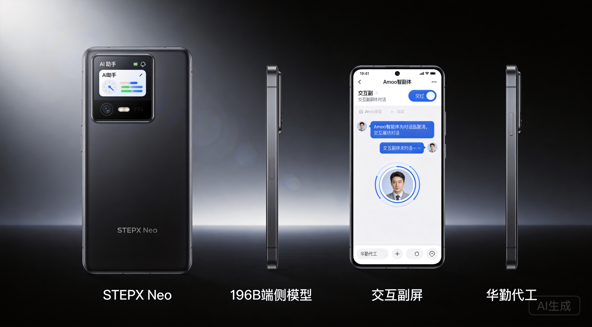
发布会上确认了首批生态合作伙伴阵容，覆盖出行、生活服务、办公、社交等主要场景：
这份名单基本覆盖了中国互联网生态的核心应用，说明阶跃星辰在Agent生态对接上已经做了大量前置工作。但需要注意的是，"宣布合作"和"深度开放接口"之间还有很大的距离——真正的考验在于这些App是否愿意向系统级Agent开放核心功能的API调用权限。
发布会同步联合上海人工智能实验室发布了两份重要文件：
这两份文件从行业标准和学术层面为AI智能体终端的安全性提供了理论框架，也体现了阶跃星辰在安全合规上的前瞻布局。在AI终端这个全新品类上，安全问题将是消费者和监管部门最关注的议题之一。
阶跃星辰在发布会上启动了"100天·共同定义智能体乐园"计划，邀请开发者和用户共同参与定义AI智能体的使用体验。这是一个开放共创的策略——通过100天的密集迭代，收集真实用户反馈，快速打磨Agent能力和Step AOS的系统体验。
这是一个很有意思的对比维度：
| 玩家 | 端侧策略 | 时间线 | 核心差异 |
|---|---|---|---|
| 阶跃星辰 | 自研品牌手机STEPX + Step AOS | 2026年7月发布，WAIC首秀 | 首个大模型公司独立造机 |
| OpenAI | 联发科定制天玑9600，Jony Ive参与设计 | 最快2027年上半年量产 | 比阶跃晚至少半年到一年 |
| 苹果 | WWDC 2026选择与Google Gemini合作 | 已落地 | 放弃自研大模型，年授权费10亿美元 |
| Gemini Nano 4内置Pixel 10 | 2026年 | Pixel全球市占率不足2%，影响力有限 | |
| 字节+中兴 | 豆包AI+中兴硬件合作模式 | 二代7月17日WAIC展示 | 非独立品牌，仅展示不开售 |
一句话总结：在"大模型公司独立造手机"这条赛道上，中国公司跑在了美国前面。
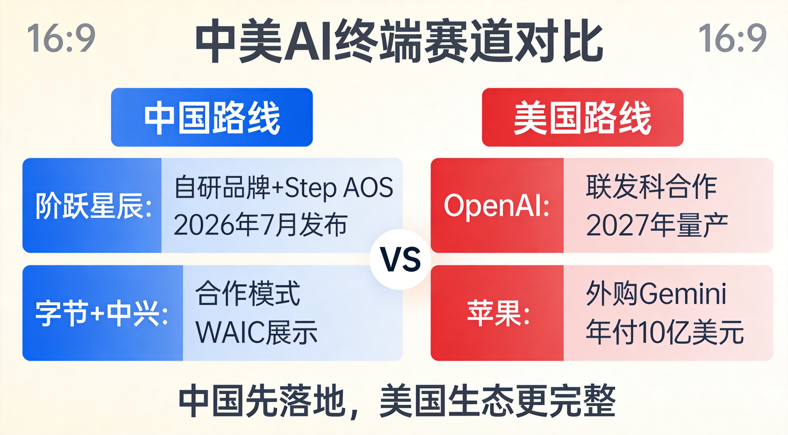
这不是因为中国技术更强，而是因为中国的手机供应链太成熟了，造手机的门槛低；而美国的AI公司强在模型和生态，硬件恰恰是短板。
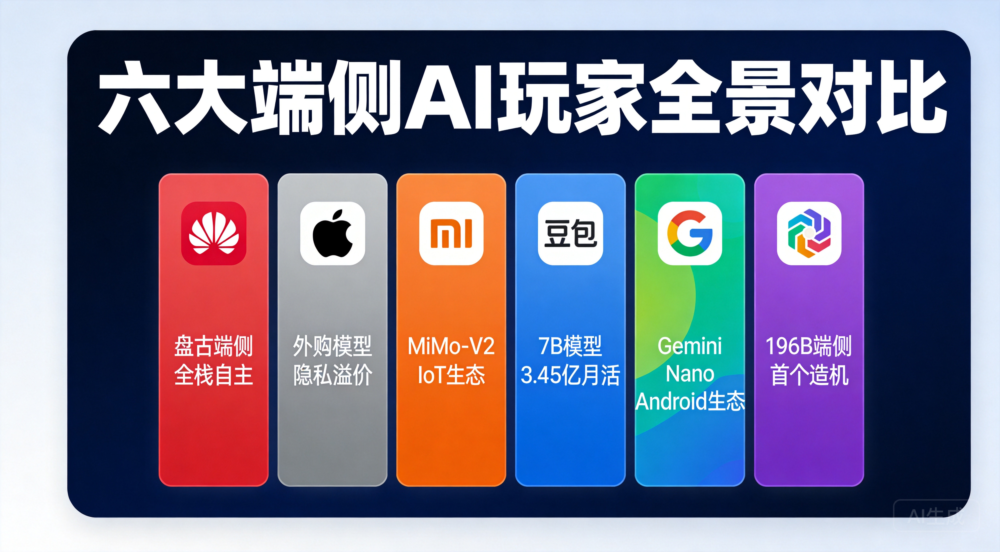
把视野拉得更广一些，目前全球端侧AI的主要玩家有六类：
| 玩家 | 端侧模型 | 终端策略 | Agent能力 | 核心差异化 |
|---|---|---|---|---|
| 华为 | 盘古端侧 | 自研+鸿蒙 | 小艺日均30亿次唤醒 | 全栈自主（芯片+系统+模型） |
| 苹果 | 3B+外购Gemini/ChatGPT | 自研iPhone | Siri跨App | 隐私架构，品牌溢价 |
| 小米 | MiMo-V2-Pro | 自研+IoT | miclaw 50+系统工具 | IoT生态最完善 |
| 豆包（字节+中兴） | 豆包7B | 合作模式 | 跨App操作 | 3.45亿月活用户基础 |
| Gemini Nano 4 | Pixel+Android | GeminiSystemService | Android生态 | |
| 阶跃星辰 | 196B端侧大模型 | 自研品牌手机STEPX | Step-GUI跨200+App | 首个大模型公司独立造机，196B参数行业最高 |
六种路径，六种赌注。华为赌全栈自主，苹果赌隐私+品牌，小米赌IoT生态，字节赌用户量，Google赌Android统治力，阶跃赌的是"模型+终端"的一体化体验。
值得注意的是，阶跃星辰的196B端侧参数是目前公开信息中端侧部署的最大规模模型，这一数字远超其他玩家的端侧模型参数量。但参数大也意味着对芯片算力和功耗的更高要求，实际体验如何还需真机验证。
说完激动人心的部分，该泼冷水了。
手机行业的残酷在于：它不是一个"好产品就能赢"的市场。供应链、渠道、品牌、售后、库存管理——每一个环节都是坑。
进网许可问题：目前阶跃星辰仅取得进网试用批文，这意味着初期产量可能只有几万台。努比亚有正式许可，但量产规模也受限。
App生态摩擦：初代豆包手机的教训还历历在目——依赖"模拟触控"实现跨App操作，结果被微信、淘宝、支付宝识别为异常操作并封禁。二代改用MCP/A2A协议，Step AOS的原子能力引擎也是基于MCP标准设计，但核心矛盾没有解决：系统级Agent绕开App直接操作，直接动了互联网巨头的蛋糕。 广告收入、用户数据、商业闭环——这些都会受到威胁。
品牌认知度为零：普通消费者不知道阶跃星辰是谁，STEPX更是一个全新的品牌。价格未公布，但无论最终定价多少，消费者买一部手机总得知道它叫什么、售后找谁、出了问题怎么办。
"全球首款"之争：努比亚、荣耀也在抢"全球首款AI智能体手机"的名号。消费者对"首款"的认知窗口很短，如果多家公司同时喊"首款"，这个叙事就失效了。
AI手机的尴尬现实：Counterpoint数据显示，AI手机渗透率已达50%，但26%的用户从未使用过AI功能，仅7%的人愿意为AI换机。这说明"AI"作为卖点很有吸引力，但作为购买决策还不够硬。
从发布到量产的距离：STEPX Neo目前仅完成发布和WAIC首秀，具体配置和发售时间均未公布。从"发布"到"量产发售"之间，还有产能爬坡、品控验证、渠道铺货等大量工作要做。
估值风险：PS 140倍。如果AI手机的体验没有达到预期，或者App生态摩擦导致核心功能受限，估值回调的压力会非常大。
不能只说风险不看优势：
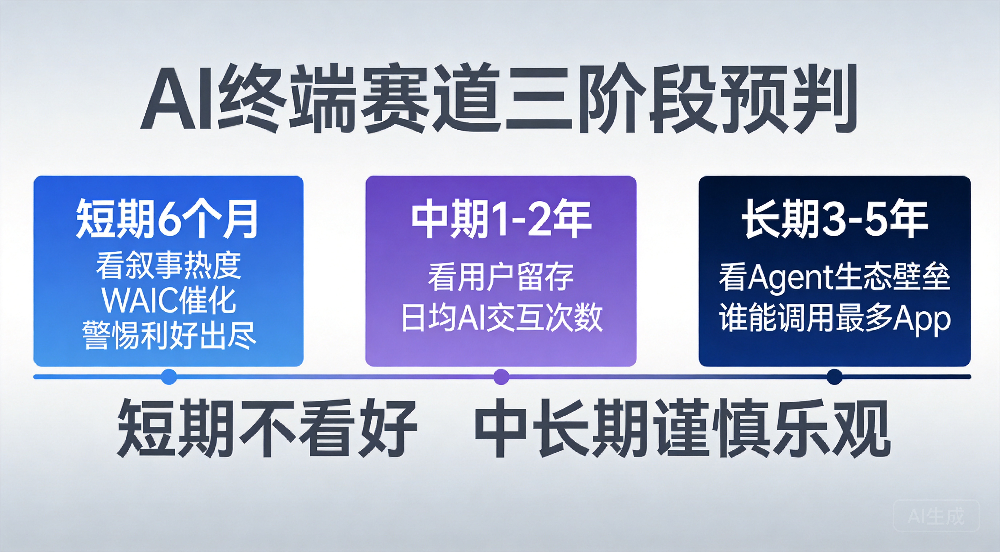
以下是赛道级判断，不涉及个股推荐。
我的判断：短期不看好，中长期谨慎乐观。
短期不看好，是因为第一代产品一定会有各种问题——App兼容性、品牌认知、售后服务、产能爬坡。价格尚未公布，但无论最终定在什么价位，普通消费者不会因为"AI"就花大价钱买一个没听说过的牌子。
中长期谨慎乐观，是因为：
中国路线：模型公司直接造硬件，或者与手机厂商深度合作。原因是中国手机供应链太强、App生态太碎片化，需要系统级Agent来统一管理。
美国路线：AI公司做模型+平台，硬件交给苹果、三星。OpenAI选择与联发科合作、找Jony Ive设计，但量产要到2027年。苹果选择外购模型（Gemini+ChatGPT），年付10亿美元。
我的判断：中国的AI终端会先落地，但美国的AI终端生态会更完整。中国的优势是快，劣势是生态碎片化和App厂商的抵制；美国的优势是生态整合能力强，劣势是硬件迭代慢。
整篇文章看下来，决定AI终端赛道成败的最核心变量其实就一个：App厂商愿不愿意开放接口？
如果微信、淘宝、支付宝愿意给系统级Agent开放标准化接口（不是模拟点击，而是真正的API调用），那AI手机的体验会发生质变——你可以对手机说"帮我订一张明天去上海的机票，用我上次住的那个酒店"，然后手机自动完成从搜索到支付的完整流程。
如果App厂商继续抵制（担心被抢入口），那AI手机就只是一个"更聪明的语音助手"，不值得花大价钱。
这个博弈的结果，可能比任何模型跑分都更能决定AI终端赛道的命运。
阶跃星辰造手机这件事，表面上看是一家公司的战略选择，但本质上反映了整个大模型行业的焦虑和突围。
当模型能力趋同、API价格见底、融资环境收紧，大模型公司必须找到自己的"不可替代性"。有的赌开源生态（DeepSeek），有的赌企业级市场（智谱），有的赌C端流量（月之暗面），而阶跃赌的是——谁能把AI从云端拉到用户手里，谁就赢了下一个十年。
STEPX Neo的发布、Step AOS的技术架构、196B端侧大模型的深度内置、Amoo智能体的亮相、豪华的生态合作伙伴阵容，以及"100天共同定义智能体乐园"计划的启动——这些都是阶跃星辰在这个赌注上亮出的底牌。
但底牌好不等于能赢。从发布到量产，从量产到用户留存，从用户留存到生态壁垒——每一步都有无数坑要踩。
这个赌注有风险，但方向是对的。
就像当年所有人都觉得特斯拉是笑话的时候，马斯克赌的是"电动车+智能化"的方向。最终他赢了，不是因为特斯拉的早期产品有多好，而是因为他赌对了方向，然后用时间和迭代把产品做对了。
阶跃星辰能不能成为AI终端领域的特斯拉？不知道。但它至少证明了一件事：大模型行业的竞争，正在从"谁的模型更强"变成"谁能把模型变成用户真正用得上的东西"。
这场终端之战，才刚刚开始。
注：本文所有数据截至2026年7月14日，市场变化迅速，数据可能随时间更新。部分预估数据来自第三方分析机构，仅供参考。
v2版更新说明：本版本根据2026年7月13日阶跃星辰发布会实际内容进行了全面更新，主要变更包括：终端品牌名由"阶跃终端"更新为STEPX、手机型号确认为STEPX Neo、操作系统名由"星枢OS"更新为Step AOS、新增Amoo智能体信息、新增196B端侧大模型参数、新增交互副屏硬件细节、删除9999元价格信息（改为未公布）、更新发售信息（WAIC首秀而非量产发售）、新增生态合作伙伴名单、新增安全白皮书信息、新增"100天·共同定义智能体乐园"计划、Step AOS技术架构大幅扩充。所有新增信息均经多家媒体交叉验证。
内容仅作科普，不构成投资建议